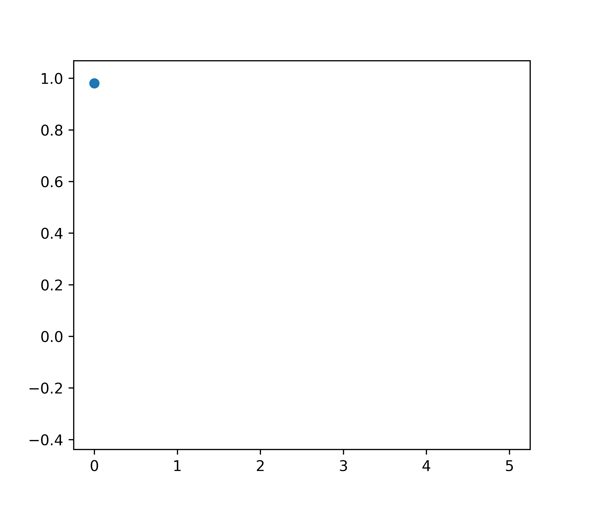

Marc Härkönen1,2, Markus Lange-Hegermann3, Bogdan Raiță4
1Max Planck Institute for Mathematics in the Sciences, Leipzig, Germany
2Fano Labs, Hong Kong SAR, China
3Institute Industrial IT, TH-OWL, Lemgo, Germany
4Scuola Normale Superiore di Pisa, Pisa, Italy
ICML 2023
$$ \frac{\mathrm{d}^2y}{\mathrm{d}t^2} + 2 \frac{\mathrm{d}y}{\mathrm{d}t} + 10y = 0 $$ Sample 5 noisy points
How to solve? $$ \frac{\mathrm{d}^2y}{\mathrm{d}t^2} + 2 \frac{\mathrm{d}y}{\mathrm{d}t} + 10y = 0 $$
Algebraic preprocessing $$ z^2 + 2z + 10 = 0 \Rightarrow z = 1 \pm 3i $$
Solution Space $$ y(t) = e^{-t} (\textcolor{#b51963}{c_1} \cos 3t + \textcolor{#b51963}{c_2} \sin 3t) $$
How to solve? $$ \frac{\mathrm{d}^2y}{\mathrm{d}t^2} + 2 \frac{\mathrm{d}y}{\mathrm{d}t} + 10y = 0 $$
Algebraic preprocessing $$ z^2 + 2z + 10 = 0 \Rightarrow z = 1 \pm 3i $$
Solution Space $$ y(t) = e^{-t} (c_1 \cos 3t + c_2 \sin 3t) $$
Gaussian process prior $$ Y(t) \sim e^{-t} (\textcolor{#b51963}{C_1} \cos 3t + \textcolor{#b51963}{C_2} \sin 3t) + \epsilon $$ where $$ \textcolor{#b51963}{C_1 \sim \mathcal{N}(0, \sigma_1)}, \textcolor{#b51963}{C_2 \sim \mathcal{N}(0, \sigma_2)}, \textcolor{#b51963}{\epsilon \sim \mathcal{N}(0, \sigma_0)} $$
Ehrenpreis-Palamodov ('70): Solutions to PDE described by "Fourier" frequencies
$$ f(x) = \int_{\textcolor{#0073e6}{V}} \textcolor{#0073e6}{D(x,z)} e^{i\langle x, z \rangle} \, \mathrm{d}\textcolor{#b51963}{\mu(z)} $$ Algebraic preprocessing Learned
Works with arbitrary systems of homogeneous linear PDE with constant coefficients
Ehrenpreis-Palamodov ('70): Solutions to PDE described by "Fourier" frequencies
$$ f(x) = \int_{\textcolor{#0073e6}{V}} \textcolor{#0073e6}{D(x,z)} e^{i\langle x, z \rangle} \, \mathrm{d}\textcolor{#b51963}{\mu(z)} $$ Algebraic preprocessing Learned
Works with arbitrary systems of homogeneous linear PDE with constant coefficients
EPGP: Gaussian Process kernels constrained to PDE solutions
$$ \frac{\partial^2 z}{\partial t^2} = \frac{\partial^2 z}{\partial x^2} + \frac{\partial^2 z}{\partial y^2} $$
$ \mathbf{E}(x,y,z,t) $
$ \mathbf{B}(x,y,z,t) $
$$ \frac{\partial u}{\partial t} = \frac{\partial^2 u}{\partial x^2} + \frac{\partial^2 u}{\partial y^2} $$